cyst
分類
玻片特徵
- Developmental cyst
- epithelial lining 與結締組織交界處平整
- 非發炎型(noninflamed)
- 結締組織鬆散
- 糖胺聚醣基質(glycosaminoglycan ground substance)。
- 發炎型(inflamed)
- 網嵴(rete ridges)
- cholesterol clefts

- 齒源 → Rushton bodies


- true cyst
- 兩到四層的扁平非角化上皮
Odontogenic
癌化
- 良性不痛
- Risk
- RC > DC > OKC
發育型
| 原因 | 好發 | 年齡 | 特徵 | ||
|---|---|---|---|---|---|
| Dentigerous cyst (DC) | follicle 分離 | 38,48 | 10 - 30y |
|
|
| Eruption cyst (EC) | Dentigerous 萌發 | 12a, 12b, 34a, ?6 | 10y ↓ | 藍色或紫棕色   |
|
| Odontogenic Keratocyst cyst (OKC) |
|
下顎骨後端，下齒槽管上方 | 10-40y | 組生齒(40%) | |
| Radiolucent、 MD方向下顎骨吸收，但牙根完整。  |
|||||
| 4-8 層、副角化(有核)、Basal cell 為 palisaded(柵狀) | |||||
| 高復發 (30%) | |||||
Orthokeratinized Odontogenic cyst (OOC) |
- | 下顎後牙 | 年輕人 | 阻生齒 (66%)、 granule layer 明顯 、 生長慢 |
|
| Gingival Cyst of the newborn | dental lamina rest | 新生兒上顎牙齦  |
- | 管腔內含有角質碎屑(keratinaceous debris) 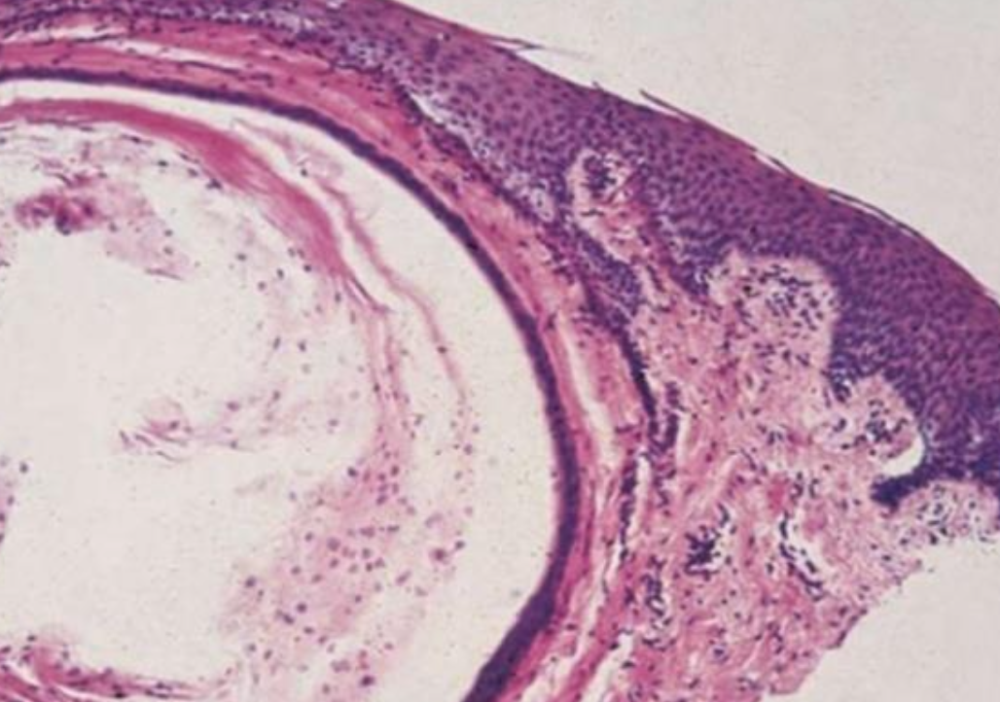 | |
| Gingival Cyst of the adult (LPC 長出來) | 下顎premolar、canine facial 牙齦 | 40-60y | 藍色(bluish)、藍灰色(DeepSkyBlue-gray)  |
||
| focal plaques | |||||
focal plaques |
|||||
| Lateral Periodontal (LPC) | 下顎 premolar、canine、lateral incisor lateral root 表面 | 40-70y | |||
類似 OKC，但推開牙齒  |
|||||
| Botryoid Odontogenic Cyst (BOC) | 多囊 LPC | ||||
| Calcifying Odontogenic Cyst ( Gorlin Cyst, COC) |
- | 前牙(65%)  |
20-40y 若有 odontoma，17y 發病 |
未萌發的牙齒(33%)、 阻生齒(66%) | |
| basal cell reverse polarity 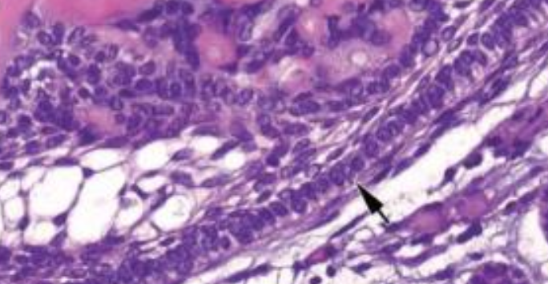 | |||||
ghost cells (嗜酸無核)  |
|||||
| β catenine + | |||||
| Peripheral Calcifying Odontogenic Cyst | COC 長出來 | - | 60-80y | . |
|
| Glandular Odontogenic Cyst (GOC) | - | 下顎前牙 | 46-51y | 跨中線、無 MAML2 | |
復發、局部侵犯性，吃 cortical bone  |
|||||
| 杯狀細胞, cilia, focal plaques | |||||
Gorlin syndrome
- SUFU 也可能造成

MAL2 讓 MEC 預後好
發炎型
| 原因 | 好發 | 年齡 | 特徵 | |
|---|---|---|---|---|
| Periapical(radicular) cysts | Rest of Malassez 被刺激 | - | - | true/ periapical cyst 圓形的光通性包圍根尖 |
牙根吸收, 2cm ↑ 根管治療無效  |
||||
| Buccal Bifurcation Cyst | 36, 46 Buccal (兩側 1/3) | 5-13y | - |
 |
- Rest of Malassez
- Hertwig’s epithelial 殘留
- Rushton bodies
- 齒源系上皮
Non- Odontogenic
| 原因 | 好發 | 年齡 | 特徵 | |
|---|---|---|---|---|
| Palatal Cysts of the Newborn | Epstin’s pearl → 融合線的上皮 | 中腭裂(前)、多發性 | - | 白色或黃白色, 角化, 不需治療 |
| Bohn nodules → 小唾液腺 | 散佈在硬腭軟顎的交界(後)、多發性 | |||
Nasolabial Cyst |
融合線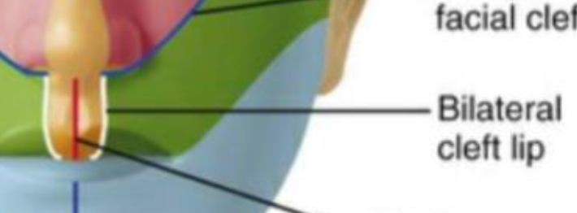 |
上唇中線旁(外側)，軟組織內 | 40-50y | 不痛 |
纖毛上皮, goblet cells, 附近有肌肉 |
||||
facial depression |
||||
Nasopalatine duct cyst |
Nasopalatine duct 上皮的殘留 | 顎部前 | 40-60y | 藍 |
牙根吸收 |
||||
| 多種上皮, cilia, goblet cell, 神經和血管可見 | ||||
Incisive canal cyst |
NDC 特例 | Incisive papilla 內 |
φ < 6mm | |
| Median palatal cyst | lateral palatal shelves 融合時將上皮困住 | palatine papilla 後硬顎中線 | 年輕 | 表面是多層鱗狀上皮 |
無神經、血管、cilia、goblet cell |
||||
Epidermoid Cyst (Infundibular cyst) |
trauma | - | 青春期後 | 凹陷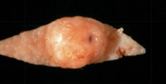 |
| 正角化上皮，爆開會被當異物 → granuloma | ||||
| Gorlin syndrome | 多發性 | |||
| Gardner syndrome | 青春期前 | |||
| Milia | - | 類似 Epidermoid Cyst | - | 小、黃或白、充滿keratin |
| 位於 Superficial dermis | ||||
| Pilar (Trichilemmal) cysts 毛髮囊腫 |
- | 頭皮 (90%)、多發性(70%) | - | 無凹陷開口 |
cholesterol clefts(90%), 淡染, 無 granular layer |
||||
| 破裂 → 發炎細胞湧入 cyst → secondary inflammation | ||||
| Dermoid Cyst | Teratoma | 口底中線 | 兒童、年輕 | 多個 germ layer |
正角化上皮, Cyst Wall 有皮膚附屬物(皮脂腺細胞核居中) |
||||
| Thyroglossal Duct Cyst 甲狀舌管囊腫 |
甲狀腺殘留 | 脖子中線上、舌骨下 |
20y ↓ (40%) | Cyst wall 上有 Thyroid follicle |
| Branchial Cleft Cyst (cervical lymphoepithelial cyst，鰓裂囊) |
branchial arches 殘留 (2nd，95%) | SCM 前/下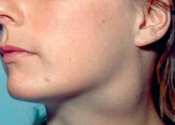 |
10 - 40y | 複層鱗狀、淋巴、發中心(germinal center)。 |
| Oral Lymphoepithelial Cyst | 上皮內陷(invagination)淋巴 → keratin debris | Waldeyer ring, 口底, 舌腹, 軟顎 | 40-50y | φ<1cm 的黏膜下黃白色腫塊 |
| 單發→發育 多發→HIV |
不含rete ridges, 角化不全並脫落填滿空腔, 淋巴組織包圍 |
- Gardner syndrome
- APC基因突變，β catenin 分解不掉 → 上皮增生 Wnt 相關
魏氏環(Waldeyer ring)
- 顎扁桃(palatine tonsils)
- 舌扁桃(lingual tonsils)
- 咽部腺樣體(pharyngeal adenoids)
Pseudocyst
| 原因 | 好發 | 年齡 | 特徵 | |
|---|---|---|---|---|
| Mucocele | 唾腺導管破裂，黏液灑入周遭的軟組織間隙 | 下唇中線旁(易咬到) | 常見 | 透明藍色, 波動感(fluctuant), 高復發  |
發炎，granulation tissue 包圍黏液  |
||||
| Ranula 蛤蟆腫 | 口底、和舌下腺有關的 Mucocele | - | ||
| Stafne Defect (Stafne Bone Cyst ，骨內囊腫) | 唾液腺擠壓 cortical bone → x-ray 透光 | 後側 mandibular canal | 中年 | 大小固定，邊界明顯  |
| Simple Bone Cyst 單純性骨囊腫 |
空()或液體骨腔 | 肱骨、 股骨近端、 下顎後牙、 下顎聯合區 | 年輕人 | 少疼痛、皮膚感覺異常 |
| 不須積極治療，復發率低 (例外: cementoosseous dysplasia) |
||||
侵犯牙根之間區域，不影響鄰牙，近遠心擴張  |
||||
| Aneurysmal Bone Cyst 動脈瘤性骨囊腫 |
大小不等骨內堆積被纖維結締組織和活性骨包圍，並充滿血液 | 長骨或脊椎骨、 下顎(2%)後牙 | 30y ↓ | 骨頭腫得快，可能多房，邊界不一定完整 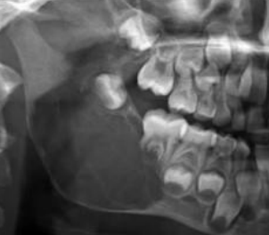 |
Granulation tissue: 巨噬細胞蝕骨  |
||||
整理

- COC 在前區

- BOC = 多囊 LPC → 在 premolar
- Slaodontogenic Cyst (GOC) 在前牙跨中線
齒源性腫瘤 Odontogenic Tumor
- 上皮組織惡性病變: carcinoma
- 間葉組織惡性病變: sarcoma
- 上皮性來源(tumors of odontogenic epithelium)
- Ameloblastoma (2nd)
- Clear cell odontogenic carcinoma
- Adenomatoid odontogenic tumor (4th)
- Calcifying odontogenic tumor
- Squamous odontogenic tumor
- 混和性來源(mixed odontogenic tumors)來自上皮+外胚層間葉
- Ameloblastic fibroma
- Ameloblastic fibro-odontoma
- Ameloblastic fibrosarcoma
- Odontoma (1st)
- Primordial odontogenic tumor
- 外胚層間葉來源(tumors of odontogenic ectomesenchyme)
- Odontogenic fibroma
- Granular cell odontogenic tumor
- Odontogenic myxoma (3^rd)
- Cementoblastoma
上皮性來源
| 原因 | 位置 | 年齡 | 特徵 | ||||
|---|---|---|---|---|---|---|---|
| Ameloblastoma | 多囊腫型 (coventional solid or multicystic intraosseous) |
|
下顎 (80-85%) | - |
|
||
follicular Pattern
 |
|||||||
plexiform pattern
 |
|||||||
basal cell pattern
 |
|||||||
acanthomatous pattern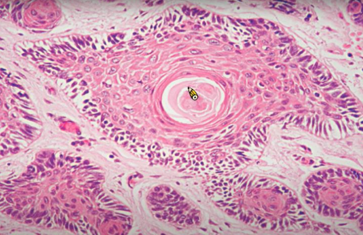 |
|||||||
granular cell pattern
|
|||||||
| 前牙 | desmoplastic pattern
 |
||||||
| 單一囊腫型(unicystic) | 下顎後 | ~23y |
|
||||
luminal ameloblastoma  |
|||||||
| intraluminal ameloblastoma 多為 plexiform type 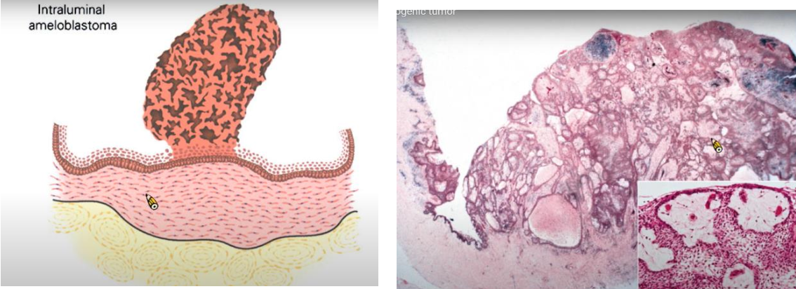 |
|||||||
mural ameloblastoma  |
|||||||
| 骨外囊腫型(peripheral/ extraosseous) | 下顎後、軟組織限 | 52y | plexiform 或是 follicular pattern  |
||||
| 局部切除， 15-20% 復發 | |||||||
| Ameloblastic Carcinoma | - | 下顎後側 | 50-60y | 放射線 不規則，邊界不清楚。 |
|||
| Calcifying epithelial odontogenic tumor (CEOT) | - | 下顎 | 30-50y |
 |
|||
  |
|||||||
| Adenomatoid odontogenic tumor (AOT) | - | 上顎、前牙、犬齒、頰側 | 10-19y | Tumor of two-third
|
|||
| 無痛小病灶(φ<3cm)，變大時骨膨脹 | |||||||
radiolucency 跨過 CEJ，可能有鈣化  |
|||||||
 |
|||||||
| Squamous odontogenic tumor | 錯位 | 上顎前，下顎後 | - |
|
|||
| Clear cell odontogenic carcinoma | biphasic | 一堆 Clear cell, 一堆 Glycogen | - | - |
 |
||
| monophasic | - | - | - |
 |
|||
| ameloblastoma-like | - | - | - |
 |
|||
混和性來源
| 原因 | 位置 | 年齡 | 特徵 | |||
|---|---|---|---|---|---|---|
| Ameloblastic fibroma | - | 下顎臼齒區 | 20y ↓ |
  |
||
| Ameloblastic fibrosarcoma | Ameloblastic fibroma 惡化 | 下顎(80%) | 27.5y (1.5:1) |
|
||
|
||||||
| Odontoma | compound | 最常見 | 上顎前牙 | 20y ↓ |
  |
|
| complex | 後牙 |
 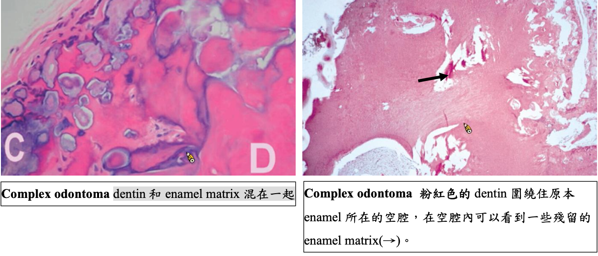 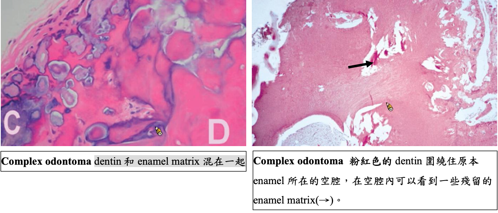 |
||||
| Ameloblastic fibro-odontoma | Ameloblastic fibroma + Odontoma | 下顎後 | 10y |
 |
||
| Primordial Odontogenic Tumor 新 | - | 下顎後牙(3^rd 大臼齒, 乳臼齒) | 10y-20y |
 |
||
| – | ||||||
外胚層間葉來源
| 原因 | 位置 | 年齡 | 特徵 | ||||
|---|---|---|---|---|---|---|---|
| Odontogenic fibroma | central type罕 (骨內) | - | 上顎為第一大臼齒以前、下顎為第一大臼齒以後 | 未萌發的牙齒(5%) |
 |
||
| Simple, WHO 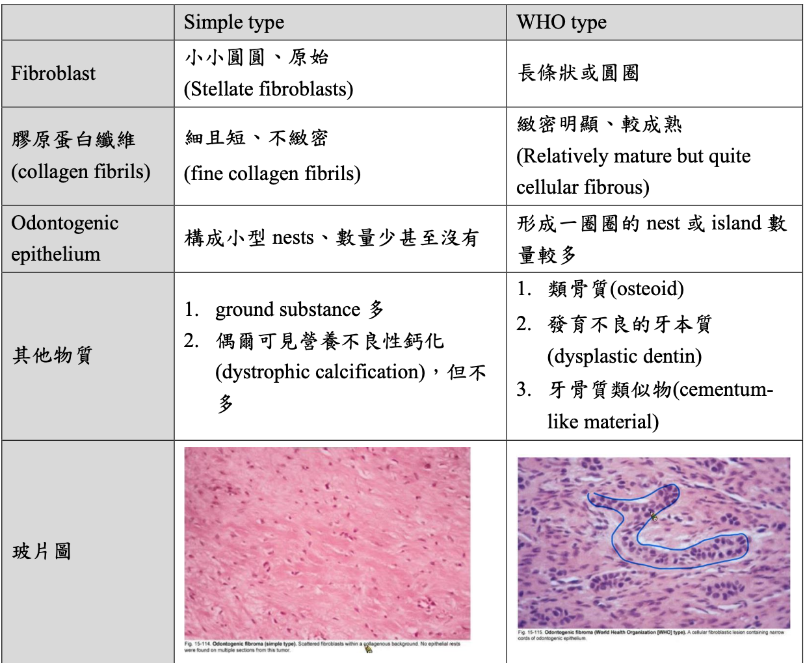 | |||||||
| peripheral type (軟組織) | - | 下顎牙齦 facial | 10-40y | 又稱 Odontogenic epithelial harmatoma, Peripheral fibroameloblastic dentinoma | |||
  |
|||||||
| Granular Cell Odontogenic tumor | - | - | - |
 |
|||
| Odontogenic myxoma 齒源性黏液瘤 |
- | 顎骨限(下顎稍高) | 25-30y |
  |
|||
| 間質淡粉紅色，看不太到 collagen fiber | |||||||
| Cementoblastoma | cementoblast 狂做 | 下顎(75%)，後牙(90%)，下顎第一大臼齒(50%) | <20y (50%) |
 |
|||
  |
|||||||
齒源性腫瘤、Cyst 整理
- 良性，但棘手，高復發
- OKC (局部侵犯，切不乾淨)
- GOC (局部侵犯)
- Ameloblastoma (局部侵犯)
- 惡性 → Ameloblastic fibrosarcoma (侵犯又快又痛)
- myxoma: 長得慢，但拿不乾淨
- 頰舌擴張
- BBC
- 多房 Ameloblastoma
- 非下顎好發
- EC: 乳前牙, 第一大臼齒
- COC: 前牙，上下一樣多
- AOT: 上顎前牙犬齒頰側
- Squamous odontogenic tumor: 上顎前，下顎後
- compound Odontoma: 上顎前牙
- Odontogenic fibroma: 上顎為第一大臼齒以前、下顎為第一大臼齒以後
| 男性較多 | 女性較多 |
|---|---|
| OOC odontogenic carcinoma NDC EC Stafne Defect Simple Bone Cyst 長骨型 |
Nasolabial Cyst Gardner syndrome Pilar cysts |
| 必定伴隨阻生牙 | 可能伴隨阻生牙 | 一定不伴隨阻生牙 |
|---|---|---|
|
|
|
| 牙根吸收 | 牙根不太吸收 |
|---|---|
|
|
|
|
|
| 正角化上皮 | 不完全角化上皮 | 非角化上皮 |
|---|---|---|
|
|
|
| 單房 Unilocular | 多房 Multilocular |
|---|---|
| OOC COC Simple Bone Cyst |
GOC Ameloblastoma |
Epithelial tumors
HPV
| Low-risk | High-risk |
|---|---|
| 良 | 惡 |
| episomal form | integrated form |
- E6 → p53, E7 → RB
episomal v.s. integrated form
| 變異名稱 | 風險/ 原因 | 位置 | 症狀、特徵 | |||
|---|---|---|---|---|---|---|
| papilloma (6, 11) |
30~50y | 軟顎、口腔常見 | 單發、低傳染 | |||
pedunculated, sessile(少)  |
||||||
| stratified squamous epi. 包結締組織 hyperparakeratosis (有核、顆粒層缺失)  |
||||||
| Verruca vulgaris 尋常疣 (2, 4) |
- | 皮膚、口腔(少見、接觸、自傳染) | 大多是sessile(無梗) | |||
 |
||||||
| 小孩身上有機會自行痊癒，治療需要 basal layer 清乾淨 | ||||||
| Condyloma acuminatum 尖銳濕疣 |
- |
|
多顆、界線清楚、無痛、兒童有機會自愈 | |||
廣底、papillary 突起不明顯、Koilocytes (空亮、葡萄乾核)  |
||||||
| Multifocal epithelial hyperplasia (Heck’s disease， 13, 32) |
低社經、HIV | 唇、頰、舌 | 小、軟、多、無痛 | |||
Papillomatous variant
|
Papulonodular
 |
|||||
 |
||||||
| Verruciform xanthoma (非 HPV) | Leasion 旁，異常免疫反應 | 口腔 > 皮膚 > 性器 | 油脂撐起 epi. 形成 Verruciform。非 Metabolic | |||
|
||||||
- xanthoma
- 吃了油脂的 Macrophage 細胞，CD63+, CD68+, CD163+ IHC8+，diastase-PAS染色+
diastase-PAS
- diastase: 澱粉酶
- PAS: Periodic Acid-Schiff stain
- 過碘酸氧化 OH 成 =O，Schiff 染
Melanotic lesions
色素增加
| 名稱 | 單發? | 風險/位置 | 特徵 | ||
|---|---|---|---|---|---|
| Oral melanotic Macules | 單 | 下唇朱紅區(vermilion zone, 33%), Buccal mucosa, gingiva, palate | 表面平坦、棕黑色、邊界清楚、φ<5mm  |
||
| 不須治療，但不易和 Oral melanoma 分辨 → 燒毀! | |||||
| 黑色素失禁(melanin incontinence): basal cell 可能破損 → macrophage 於 CT 吞噬 → melanophage  |
|||||
| Physiologic Pigmentation (生理性) | 多 | 黑人 | - | ||
| Chronic irritation (慢性刺激) |
|
||||
| Syndromes or Diseases Associated |
|
||||
| Drug-induced | 奎寧(chloroquine), palate | 左右沒有完全對稱  |
|||
| melanin堆積，確診直接 Bleaching | |||||
一些名詞

Peutz-Jeghers syndrome
- 體染色體顯性
- STK11/LKB1
- peri-oral跟oral cavity會出現很多pigment
- 惡化腸道癌症intestinal cancer 15被 → 預防性切腸子


Addison’s disease
- 腎上腺 ↓ → cortisol ↓ → ACTH↑ → α-MSH → malannin
- 面色黯淡
- 到處都黑色素沉澱

Neurofibromatosis
- cafe-au-lait spots disease (咖啡牛奶斑)
- neurofibroma (神經纖維瘤)
McCune-Albright syndrome (Albright’s syndrome)
- 咖啡牛奶斑
- 遺傳性疾病
- 多骨性纖維發育不良(Polyostotic Fibrous Dysplasia)
咖啡牛奶斑

Naevus
- Naevus cell 無 Dendrites
- 位置:
- 先天: 四肢，口內少見

- 後天: NRAS(大 lesion，6%), BRAF(小 lesion，80%) mutation (3.~5.是一個漸進的過程)

- 先天: 四肢，口內少見
Intraoral melanocytic Nevus
- 後天，口內，最常見
- 位置: Palate,mucobuccal fold, orgingiva
- BRAF
- 35y
Blue nevus
- 後天，口內，次常見
- 位置: Palate
- GNAQ mutation
組織
- Cell 分三類：
- A: Epithelioid (在 epi)
- B: Lymphocyte-like
- Spindle-shaped

- Compound (在 epi., dermis 之間) 或 Intradermal
- 只有 Junctional 會呈現 Tear-like Nest
- Indian-file pattern: 鑽進 Dermis 排成一排

- 深層可能圍皮膚附屬物、神經
Melanoma (惡)
可以從 Melano cell, Naevus 轉過來，多變，甚至可以沒有 Pigmentation
-
ABCDE
- Asymmetry
- Border irregularity
- Color variegation
- Diameter >6mm
- Evolving
-
Horizontal phase(Radial) → Vertical phase (Invasive)
-
染色:
- S100
- HBM-45, Mitf: Spindle-shaped cells
- MART-1 (Melan-A): Epithelioid
-
Cutaneous melanoma
- 第三常見(<5%)的皮膚癌，但卻是皮膚癌中致死率最高的(75%)(第一常見為basal cell carcinoma，第二為SCC)
- 主因為 UV
GLA:白人成人，中年(45-84歲，平均61歲)GENE:- CDKN2A, CDK4 mutation
- BRAF, NRAs
-
Oral mucosal melanoma
- 原因不明
- 壞透了，直接 T3
- 佔 melanoma <1%
GLA:男性，hard palate or maxillary alveolus，50-70yGENE:Kit (CD117)

| 類型 | 好發 | 特徵 | ||
|---|---|---|---|---|
| Superficial Spreading (Pagetoid) - |
|
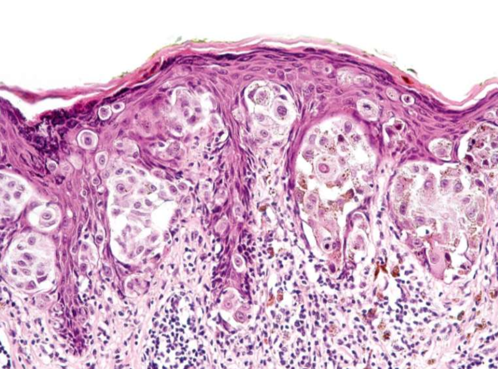  |
||
| Nodular - | 無 Radial phase，直接往下侵犯 | |||
| Lentigo maligna | 中臉(陽光曝曬) |
|
||
| Lentigo maligna - | Lentigo malign 侵犯 | |||
| Acral Lentiginous - | oral melanoma中最常見的類型 |
|
||
|
||||
- Acral
- 肢端
Oral potentially malignant disorders (OPMD)
煙、酒、檳榔
- 好發: lateral/ventral tongue、floor of mouth
| 名稱 | 原因 | 特徵 | ||
|---|---|---|---|---|
| Oral submucous fiberosis | Arecoline (檳榔鹼) |
|
||
| Leukoplakia, Erythroplakia | 紅斑較嚴重，不產生角質  |
|
||
. |
||||
| Poliferative verrucous leukoplakia (pbl) | ？ |
 |
||
 |
||||
Oral epithelial dysplasia (OED)
OED ∈ OMPD
- 硬顎較少發生。
- 分為三個程度
Mild
- 影響到下三分之一
- Basal cell 增生，變大
- Rete ridge 變寬
- 底層 keratin (紅染)
- 可能發炎

Moderate
- 到中三分之一

Sever


Oral Squamous Cell Carcunoma(OSCC)
- 徵兆: OMPD
- 好發: lateral/ventral tongue, floor of mouth
- 檳榔: Tongue
GENT:- TP53: 抑癌基因，沒有藥物
- PIK3CA: 致癌基因，有標靶藥物
- 紅白斑，凸起
分級
根據和正常上皮的相似度及產生的 keratin 多寡來分級
- Grade I, well-differentiated: 產生正常量的 keratin
- Grade II, moderately-differentiated: 產生少量的 keratin
- Grade III, poorly-differentiated: 幾乎不產生 keratin
Grading 的判斷較為主觀,staging 和預後(prognosis)的相關性比 grading 高很多。
Verrucous Carcinoma(VC)
- Ackerman’s tumor
- 分化良好，不會鑽，用推的(Pushing) → 侵犯稍差
- HPV 低相關
- 四周可能有 SCC(20%)

Oropharyngeal Cancer
Staging > Grading
| 特徵 | HPV(+) | HPV(-) |
|---|---|---|
| 發生率趨勢 | 增加 | 減少 |
| 年紀 | 55-58y | + 3 ~ 4 y |
| 危險因子 | 多重性伴侶、抽菸 | 抽菸、酒精 |
| 分期(stage) |
|
Variable |
| 來源 | 顎和舌扁桃腺的隱窩上皮 (crypt epithelium) | 表層上皮 (surface epithelium) |
| 癌前病變 | 難偵測 | Squamous dysplasia |
| 主要型態 | nonkeratinizing SCC | keratinizing SCC |
| 分級(grading) | ✗ | ✓ |
| p16 IHC | + | - |
| 存活率 | 較好 | 較差 |
HPV-associated oropharyngeal squamous cell CA (OPSCC)
-
常常病人來的時候都已經轉移到頸部淋巴，頸部淋巴結通常不會痛
-
HPV type 16 (90%)
- p16 IHC (免疫螢光染色)，若 70%細胞核、值都呈現染色即確診 (口咽 only)
-
Risk: 性行為
-
GLA: 4:1, -, 55-58y
-
組織
- nonkeratinizing SCC
Keratoacanthoma良 (角質棘皮瘤)
罵取硬要補充，都給他講就好啦
- 自限性上皮增生
- 病因: DNA 修復缺陷
- 陽光曝曬: 65-71y，男性
- 與其他DNA 修復缺陷疾病相關
- Xeroderma Pigmentosum
- Muir-Torre Syndrome
- 位置: 上下唇頻率相等
- 特徵:
- 堅硬、界限清楚、廣底
- 中央角蛋白栓塞
-
三階段
- Growth Phase: 會迅速增大
- Stationary Phase: 穩定大小
- Involution Phase:自發性消
- 大多 6 至 12 月消退
-
組織
- 中央凹陷處的邊緣會有銳角
- 坑洞內充滿角蛋白
- 不會延伸超過病灶的汗腺
- 分化成熟，但角化不良，可能 keratin pearls
- 與 SCC 很難區分 → 切
整理
Verruciform xanthoma 相關疾病
與皮膚、黏膜破壞相關的Immune disease、precancerous disease
- 扁平苔癬(lichen planus)
- 疱瘡(pemphigus vulgaris)
- 紅斑性狼瘡(lupus erythematosus)
- 移植相關疾病(graft-versus-host disease(gvhd))
- 大皰性表皮鬆懈(epidermolysis bullosa俗稱泡泡龍症)
- 上皮病變(epithelial dysplasia)
- 鱗狀細胞癌(squamous cell carcinoma)
- 疣狀角化不良瘤(warty dyskeratoma)。
TNM staging
- Tumor: 原發性腫瘤(primary tumor)的大小和侵犯範圍
- 大小(cm)
- 深度 (DOI，mm)
TX: 無法評估Tis: carcinoma in situ
- Lymph Node: 擴散至區域淋巴結的程度
- 轉移的淋巴結顆數、大小(cm)、同/對/雙側(ipsi-, contra-, bi-)
- extranodal extension (ENE，淋巴結外擴散)
Minor: 擴散< 2 mmMajor: 擴散> 2 mmNX: 淋巴結無法被評估
- distant Metastasis?
M1:M0
Note
Oral melanoma staging
- T3: 黏膜
- T4a: 深軟組織、軟骨、硬骨、overlying skin
- T4b: 腦組織及腦神經、masticator space、頸動脈、prevertebral space、縱隔腔結構
OSCC and HPV- OPSCC staging
- T
| DOI(mm) \ size(cm) | < 2 | 2~4 | > 4 |
|---|---|---|---|
| < 5 | T1 | T2 | T3 |
| 5~10 | T2 | T2 | T3 |
10 |? |T3| T3
- N
| N | 淋巴結 | 大小 | ENE | |
|---|---|---|---|---|
| 1 | 單 | 同 | ≤ 3 cm | ✗ |
| 2a | 3-6 cm | |||
| 2b | 多 | ≤ 6cm | ||
| 2c | - | 對/雙 | ||
| 3a | - | - | > 6 cm | |
| 3b | - | - | - | ✓ |
- Staging
HPV+ OPSCC
唾液腺疾病
- 通則
- 女性成年人
- Parotid>minor>submandibular>sublingual
- 越少發作的位置越兇多吉少，Parotid 80%良性、sublingual 90%惡性
- Minor salivary gland 的病灶通常在 palate 居多
- 通常發育中心會偏一邊(如果長在中線上的不要猜是唾液腺疾病)
Cyst, 增生, 壞死
| 原因 | 好發 | 年齡 | 特徵 | ||||
|---|---|---|---|---|---|---|---|
| Mucocele/Ranula (口底) | mucous extravasation | Duct 破 | 下唇 | Youth |
 |
||
| mucus retention cyst | Duct 阻塞 | - | 較老 |
 |
|||
| Maxillary sinus lesion | pseudocyst | 創傷、發炎導致膿液堆積在 CT  |
- | - |
|
||
| retention cyst | 黏液腺分泌受阻 | - | - | cystic lesion 充滿黏液、少發炎 | |||
| Post Operative Maxillary Cyst | 相關手術後併發症，granulation tissue 陷入粘膜 | - | 術後長時間 & 30-50y |
|
|||
| Necrotizing sialometaplasia (壞死性涎腺變生) | 缺血 → 局部破壞性發炎: 局部麻醉劑(Dental injection) 、不合的假牙 | 軟硬顎連接處、小唾液腺 | 46y |
 ｜ ｜ |
|||
 |
|||||||
| Adenomatoid hyperplasia罕 | 不明 | - | 40-60y |
|
|||
| Oncocytosis 瘤細胞增多症 |
oncocyte 在唾液腺裡面一區一區的增生 | Parotid g. | 老人 |
|
|||
Sialadenitis
| 原因 | 好發 | 年齡 | 特徵 | ||||
|---|---|---|---|---|---|---|---|
| Sialadenitis | Mumps | - | - | Youth |
|
||
| Acute Bacterial ~ | S.aureus, S.viridans, S. pneumoniae |
- |
 |
||||
| Chronic | Duct 阻塞 | - | |||||
| Subacute Necrotizing ~ (亞急性壞死性) | - | Palate | Youth |
|
|||
| Cheilitis Glandularis | 太陽? | 下唇 | 老男 |
 |
|||
| Küttner tumor | IgG4-related disease | Submandibular g. | - |
|
|||
| Mikulicz Disease (米庫立茲氏病) | Parotid g. | - | 雙側腮腺、淚腺腫大、席紋樣纖維化(storiform-type fibrosis)、淋巴球浸潤  |
||||
其他
| 原因 | 好發 | 年齡 | 特徵 | ||||
|---|---|---|---|---|---|---|---|
| Sialolithiasis (唾液腺結石症) | 和鈣、磷的代謝無關 | Submandibular gland | - |
 |
|||
| Sialadenosis (Sialosis，唾液腺腫大) | 治療效果不好，除非控制住潛在的系統性疾病 | ||||||
| Sialorrhea (excessive salivation，流涎症) | |||||||
| Xerostomia (dry mouth，口乾症) | - | 舌乳頭萎縮、鵝口瘡(oral candidiasis), 蛀牙 | |||||
| Sjogren syndrome | 慢性、系統性、自體免疫疾病 | 腮腺 (85%) | 中年 |
|
|||

乾眼症檢測: Schimer test
把試紙放在病人眼下5分鐘，觀測溼透的程度是否低於8mm
| Value(試紙沾濕長度) | Condition |
|---|---|
| >10mm/5min | Normal |
| <5mm/5min | Highly suggestive |
| 0-2mm/5min | Strongly confirm a dry-eye state |
乾口的檢測
- Lashley cups測量腮腺流量是否減少
- 下唇小唾液腺切片，觀測每四個小葉中，是否有兩個以上的小葉有不正常的Lymphocytes infiltrate(4mm2區域超過50個lymphocyte)
Tumor
- Parotid glands: 發生高，體積大，良性多
- Sublingual glands: 一出現，高機率惡性
- 女性較常見，Warthin tumor 例外
- 良性: 40-70y；惡性更年長
- 沒有可靠的標準可以在臨床區分出良性及惡性腫瘤

| 好發位置 | 種類 | age | 特徵 | |||
|---|---|---|---|---|---|---|
| Acinus | Acinic cell CA | - |
 |
|||
| Intercalated duct | Pleomorphic adenoma (PA, 多型性腺瘤)良,1st |
30-55y |
  |
|||
| Malignant mixed tumors | Carcinoma ex pleomorphic adenoma  |
|||||
| Adenoid cystic CA (AdCC) | - |
|
||||
|
||||||
| Epithelial myoepithelial CA | ||||||
| Polymorphous (Low-grade)adenocarcinoma (PLGA) | Palate，老人 |
 |
||||
 |
||||||
| Monomorphic adenoma良↓ | ||||||
| Canalicular Adenoma良 小管腺瘤 |
上唇(75%)，70y ↑ |
 |
||||
| Basal cell Adenoma良 基底細胞腺瘤 | 中老年人 |
|
||||
membranous type
 |
||||||
| Salivary duct carcinoma罕 (唾液腺管癌) |
老人 |
|
||||
| Striated duct | Warthin’s tumor良,2nd | 50-70y |
|
|||
| Oncocytoma 良,3rd 嗜酸細胞瘤 |
80y |
|
||||
| Excretory duct | Mucoepidermoid carcinoma1st | 2-70y |
  |
|||
 |
||||||
Central type
 |
||||||
| Ductal adenocarcinoma | ||||||
| Epidermoid carcinoma | ||||||
| Papilloma | ||||||
整理
- Youth
- mucous extravasation Ranula
- Mumps
- Subacute Necrotizing Sialadenitis
- 年齡平均分部
- Mucoepidermoid carcinoma
- 好發於 Palate
- AdCC
- polymorphous adenocarcinoma
- clear cell carcinoma (80%)
- Necrotizing sialometaplasia (壞死性涎腺變生)
- 好發於上唇
- Canalicular adenoma (75%)
- 男性
- Salivary duct carcinoma
- Warthin’s tumor
- Ductal Papilloma

皮膚疾病
外胚層發育不良
- Ectodermal Dysplasia
- 兩個以上外胚層來源的構造無
- X隱性
- EDA mutation
- NFκB family
- 特徵
- 缺牙、少髮、口乾、無汗
- 完全缺牙 (anodontia) 少見
- 眼睛周圍細小、有色素沉澱的皺紋
- midface hypoplasia
- 指甲可能出現營養不良和易碎

角化異常
Disorder of Keratinization
角質
5、14: 複層口腔上皮都有
1、6、10、16: 角化
4、13、19: 非角化
| 名稱 | 成因 | GLA | 特徵 | |||
|---|---|---|---|---|---|---|
| White Sponge Nevus良 (Cannon disease) |
體顯性 | 兩側的頰黏膜，出生時、孩童早期 |
|
|||
 |
||||||
| Hereditary Benign Intraepithelial Dyskeratosis良 (HBID, Witkop’s disease) |
體顯性 GENE: 4q35端粒, NLRP1, M77T |
口腔與結膜黏膜，孩童 |
|
|||
 |
||||||
| Dyskeratosis Congenita 先天性角化不良 |
X隱性 GENE: DKC1 |
10y ↓ |
 |
|||
|
||||||
| Hereditary Mucoepithelial Dysplasia良 | 體顯性 | - |
|
|||
|
||||||
過度角化
| 名稱 | 成因 | GLA | 特徵 | ||||
|---|---|---|---|---|---|---|---|
| Pachyonychia Congenita 先天性厚甲症 | 體顯性 | - |
 |
||||
|
|||||||
 |
|||||||
| Papillon-Lefèvre Syndrome | GENE: cathepsin C gene |
手掌與腳底 |
|
||||
 |
|||||||
色素相關
| 名稱 | 成因 | GLA | 特徵 | ||||
|---|---|---|---|---|---|---|---|
| Xeroderma Pigmentosum罕 著色性乾皮病 |
體隱性，UV損傷修復不能 | 下唇和舌尖(SCC 多)， 很早 (口腔: 20y↓ ; 非黑色素皮膚癌: 10y↓) |
|
||||
| Peutz-Jeghers syndrome | 體顯性， 抑癌 GENE: STK11(LKB1) |
兒童早期 |
 |
||||
| Incontinentia Pigmenti (色素失調病，Bloch-Sulzberger syndrome ) |
X顯性 GENE: NEMO (NFκB Essential Modulator) |
剛出生 |
|
||||
水皰期上皮內裂解，內部充滿嗜酸性球疣狀期過度角化, acanthosis, papillomatosis色素過度沉積階段皮下結締組織 melanin-containing macrophage，即黑色素失調(melanin incontinence) |
|||||||
Hair Follicle & Sebaceous glands
| 名稱 | 成因 | GLA | 特徵 | ||||
|---|---|---|---|---|---|---|---|
| Cowden Syndrome (多發性缺陷瘤症候群，Multiple hamartoma syndrome) |
GENE: PTEN (腫瘤抑制，20% 測不到) |
 |
|||||
| Muir-Torre Syndrome | DNA mismatch repair 異常， GENE: MSH2(90%), MLH1 |
50-60y, AIDS |
|
||||
  |
|||||||
上皮裂解
Acantholytic Disorder
| 名稱 | 成因 | GLA | 特徵 | ||||
|---|---|---|---|---|---|---|---|
| Keratosis follicularis (Darier Disease) | 體顯性， ATP2A2 mutation → 細胞內鈣離子幫浦(SERCA2) 異常 → desmosome 異常 | 10-20y |
  |
||||
 |
|||||||
| Warty Dyskeratoma (疣狀角化不良， Isolated Darier disease) |
- |
|
|
||||
| Pemphigus 天疱瘡 |
自體免疫疾病 | ||||||
| vulgaris (PV，常見) | Ab 打 Desmosomes | 50y |
|
||||
 |
|||||||
| Paraneoplastic Pemphigus罕 (PP) 腫瘤誘導性天疱瘡 |
|
   |
|||||
|
|||||||
- Nikolsky sign
- 水泡邊緣摸一摸,給一個側方力量,水泡會越來越大
皮下裂解
Subepidermal Blistering Disease
泡泡龍寶寶
| 名稱 | 成因 | GLA | 特徵 | ||||
|---|---|---|---|---|---|---|---|
| Epidermolysis Bullosa (大泡性表皮鬆解，泡泡龍寶寶) |
細胞附著蛋白異常 → 異質性遺傳性皮黏膜水皰病變 | ||||||
| Simplex | keratin 5, 14 | 上皮內裂，輕微 | |||||
| Junctional |
|
|
|||||
| Dystrophic type | collagen 7 | Dominant (體顯性)
Generalized Recessive (全身隱性)
|
|||||
| Kindler syndrome | hemidesmosomal attachment protein, kindlin-1 |
基底細胞層下方與透明層的界面處裂解 | |||||
| Epidermolysis bullosa acquisita (EBA) |
|
手背 |
  |
||||
 |
|||||||
| Angina Bullosa Hemorrhagica | 創傷、類固醇相關 | 軟顎，中年 |
 |
||||
類天皰瘡
| 名稱 | 成因 | GLA | 特徵 | ||||
|---|---|---|---|---|---|---|---|
| Mucous Membrane Pemphigoid (黏膜類天皰瘡， Cicatricial pemphigoid，瘢痕性類天皰瘡) |
|
50-60y，口腔, 各式黏膜 |
 |
||||
 |
|||||||
| Bullous Pemphigoid (BP) 大皰性類天疱瘡 |
|
75-80y |
|
||||
 |
|||||||
| Linear IgA Bullous Disease (LAD) 線狀 IgA 大皰性皮膚病 |
|
青少年, 老人 |
  |
||||
| Dermatitis Herpetiformis (DH) 疱疹性皮膚炎 |
|
青壯年和中年人 |
|
||||
 |
|||||||
hemidesmosome
epiligrin = laminin-5 = laminin-332
type XVII collagen = BP180
type VII collagen = BP290

苔蘚樣皮膚炎
Lichenoid and Interface Dermatitis
- Basal cell 退化
| 名稱 | 成因 | GLA | 特徵 | ||||
|---|---|---|---|---|---|---|---|
| Lichen Planus (LP) 扁平苔癬 |
壓力、甲狀腺低落？ | 中年，口腔黏膜單發 |
|
||||
無症狀 網狀型 (Reticular form )
丘疹型 (Papular type)
斑塊型 (Plaque type)
 有症狀 Erosive
 Bullous form
Ulcerative form
|
|||||||
 |
|||||||
| Lichenoid Contact Reaction | amalgam (半抗原) | LP，但只出現在有 amalgam 的位置、移除 amalgam 即消失。 | |||||
| Lichenoid Drug Reaction | 藥物 | 非直接性 IgG 螢光染色 → string of pearls (沿著複層鱗狀上皮的 basal cell layer 細胞膜)  |
|||||
| Chronic Ulcerative Stomatitis (CUS) 慢性潰瘍性口炎 |
自體免疫: p63 的異構體 | 60y |
  |
||||
| Graft-Versus-Host Disease (GVHD) | 骨髓移植 | 舌頭、唇頰側黏膜 |
|
||||
 |
|||||||
| Erythema Multiforme (EM) 多形性紅斑 |
HSV, 肺炎黴漿菌 (Mycoplasma pneumoniae) 相關 | 20-30y, 黏膜(口腔) |
    |
||||
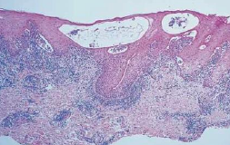 |
|||||||
| EM minor | 只有皮膚，雙側對稱 |
|
|||||
| Stevens-Johnson Syndrome |
|
年輕 |
  |
||||
|
|||||||
| Toxic Epidermal Necrolysis | 60y ↑ |
|
|||||
Lupus Erythematosus (LE) 紅斑性狼瘡
-
B lymphocyte ↑，T lymphocyte 功能不正常
- typeIII 過敏 ， 抗體打抗體
-
女性多
-
血檢
- ANAs+
- Sm antibody+ (30%，高特異)
- dsDNA antibody+
| 名稱 | GLA | 特徵 | |||
|---|---|---|---|---|---|
| 系統性紅斑狼瘡 (SLE) | 31y |
 |
|||
| Chronic cutaneous (CCLE) | 侷限在皮膚、黏膜表面 |
|
|||
| Subacute cutaneous (SCLE) | - |
 |
|||
組織
-
慢性發炎浸潤
-
Basal layer 退化
-
Basal membrane IgM、IgG 或 C3 沈積
-
皮膚
- 上皮
- 萎縮且扁平，偶有 acanthosis
- Basal membrane 增厚
- PAS 染色證明
- 上皮

- 口腔
- 過度角化 → 白線
- Basal membrane 斑塊 (PAS +)
- 上皮下、深層血管周圍淋巴細胞浸潤

牛皮癬皮膚炎
Psoriasiform Dermatitis
| 名稱 | 成因 | GLA | 特徵 | ||||
|---|---|---|---|---|---|---|---|
| Psoriasis 牛皮癬 |
|
20-30y，頭皮、手肘和膝蓋 |
 |
||||
|
|||||||
| Erythema Migrans良 游移性紅斑，地圖舌 |
都沒啥相關 | 多到少:
|
  |
||||
| Reactive Arthritis (RA) 反應性關節炎 |
可能有免疫介導 | - |
 |
||||
Collagen and Elastic Tissue
| 名稱 | 成因 | GLA | 特徵 | ||||
|---|---|---|---|---|---|---|---|
| Ehlers-Danlos Syndrome | 體顯性 (80%) Type V collagen GENE: COL5A1, COL5A2 |
- | Classical type
|
||||
Hypermobility type
|
|||||||
Vascular/ ecchymotic type
|
|||||||
type VIII罕
|
|||||||
| Marfan’s syndrome | GENE: FBN1 (fibrillin-1，肌原纖維，影響 Collagen) |
- |
|
||||
| Tuberous Sclerosis (結節型硬化症， Epilolianuria) |
體顯性， GENE: TSC1, TSC2 |
- |

 
|
||||
 |
|||||||
| Proteus syndrome | GENE: AKT1 (PKB related) |
- |
|
||||
特發性結締組織疾病
Idiopathic Connective Tissue Disorders
| 名稱 | 成因 | GLA | 特徵 | ||||
|---|---|---|---|---|---|---|---|
| Systemic Sclerosis 全身性硬化 |
M2 macrophage 相關 | 成年 |
 |
||||
 |
|||||||
 |
|||||||
| localized scleroderma | 類似 Systemic Sclerosis， 但指影響一塊局部皮膚，無後遺症 | ||||||
| CREST Syndrome | 一種 Scleroderma 變形 | 50-60y |
|
||||
退化性、代謝性疾病
Degenerative and Metabolic Diseases
| 名稱 | 成因 | GLA | 特徵 | ||||
|---|---|---|---|---|---|---|---|
| Acanthosis Nigricans 黑色棘皮層增厚病 |
良性 |
|
|||||
| 惡性 |
 |
||||||
|
|||||||
| Xanthelasma 黃斑瘤 |
血脂升高 | 中老年，眼周圍 |
 |
||||
血管疾病
Vascular Diseases
| 名稱 | 成因 | GLA | 特徵 | ||||
|---|---|---|---|---|---|---|---|
| Behçet Syndrome |
|
30-40y，眼部、口腔、生殖器和皮膚 |
|
||||
  |
|||||||
| MAGIC syndrome | Behçet syndrome 變形。多發性的口腔與生殖器潰瘍，間質性的軟骨炎 (Mouth and Genital Ulcers with Inflamed Cartilage Syndrome ) |
||||||
| Aphthous Ulcer 口瘡性潰瘍 |
CD8+ T cell 破壞上皮 | 30y↓， 非角化上皮 |
   |
||||
| Kawasaki Disease 川崎氏病 |
- | 10y↓亞裔 |
|
||||
其他
- X隱性
- 外胚層發育不良
- Dyskeratosis Congenita
- X顯性
- Incontinentia Pigmenti (色素失調病，Bloch-Sulzberger syndrome )
- NEMO
- Incontinentia Pigmenti (色素失調病，Bloch-Sulzberger syndrome )
- 舌背白斑
- Lichen planus
- Pachyonychia Congenita
- Dyskeratosis congenita
- 脫屑性牙齦炎
- MMP, LP, PV
- 易有惡性變化
- Dyskeratosis Congenita (OPMD)
- Xeroderma Pigmentosum (SCC, BCC)
- GVHD (SCC)
- Generalized Recessive Dystrophic EB (SCC)
- Plummer-Vinson syndrom (SCC)
- Peutz-Jeghers syndrome (胃腸道腺癌, 乳癌)
- Cowden Syndrome ( 乳腺癌risk)
- DNA repair 異常
- Muir-Torre Syndrome
- Keratoacanthoma
- Xeroderma Pigmentosum
指甲

舌頭
- Hairy Tongue 是絲狀乳頭過度角化，與抽菸相關。
- Fissure Tongue 是絲狀乳頭角化消失。
- Hairy Leukoplakia 較常在舌側，與其他三者不同。[EBV 感染]

天疱瘡們

裂開
- Acantholytic
- PV
- Darier Disease
牙齒 Hemidesmosomes 無 17 → MMP 口內病灶常見
| 目標 | EB | Pemphigus |
|---|---|---|
| Hemidesmosomes | ||
| Keratin 5,14 | Simplex | - |
| BP230 | - | BP |
| Collagen 17 (BP180) | Junctional | BP, LAD |
| Laminin-332 | MMP | |
| α6β5 integrin | MMP (α6) | |
| Collagen 7 (BP290) | Dystrophic, EBA | - |
| Desmosomes | ||
| Desmoglein 1,3 | - | PV, PP |
| Plakin family | - | PP |

復發性口瘡
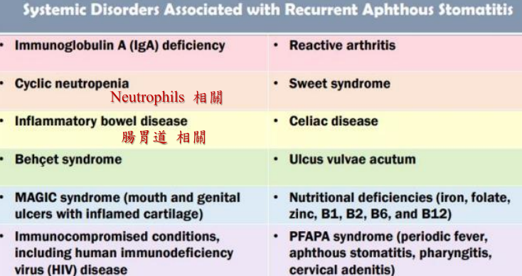感染
細菌感染 Bacterial Infection
膿皰瘡 Impetigo
- S. aureus 與 S. pyogenes
- Bullous impetigo:相對比較不常見，主要是由 S. aureus
| 原因 | GLA | 特徵 | ||||
|---|---|---|---|---|---|---|
| Impetigo | S. aureus 與 S. pyogenes | - | ||||
| Bullous impetigo | S. aureus |
 |
- | |||
| 丹毒 Erysipelas | β-hemolytic streptococci | 年輕人和較老的成年 |
|
|||
| 猩紅熱 Scarlet Fever | Group A, β-hemolytic streptococci | Palate, 3-12y |
|
|||
| Tonsillar concretions and Tonsillolithiasis | 脫落的角質蛋白和伴隨著次級細菌群落的外來物質 | - | 口臭，PANO | |||
| 白喉 Diphtheria | - | |||||
病毒
-
Oral Hairy Leukoplakia (OLH)
- EBV 會在舌側引發
- 白色黏膜斑塊且不會被擦掉
-
EBV
- HI2C3L

- HI2C3L
-
HSV 最常用的治療藥物:Acyclovir (口服、藥膏都有,但是不能同時使用)
-
卡波西肉瘤(Kaposi1. sarcoma)
- HHV-8
- Patch phase: 血管圍繞在原本存在的血管旁增生
- Plaque: 明顯的 spindle cell 增生
- Nodule: 血管外 RBC, 有縫狀的管腔
-
Shingles (帶狀皰疹)
- VZV
-
Hand-foot-and-mouth Disease
- Enterovirus
- EV71嚴重的神經系統併發症，例如：
- 病毒性腦膜炎 (Viral Meningitis)
- 腦炎 (Encephalitis)
- 心肌炎 (Myocarditis)
- 急性肢體麻痺症 (Acute Flaccid Paralysis, AFP)
- Congenital rubella syndrome(CRS)
- 感染 CN8，耳聾、白內障、心臟疾病
真菌
-
Candidiasis
- Nystatin 的懸浮液(漱口)
-
不規則捲邊
- 芽生菌病 Blastomycosis
- 副球黴菌病
-
球黴菌病 Coccidioidomycosis
- 裂谷熱(Valley fever )
-
副球黴菌病 Paracoccidioidomycosis
- 男生
- 口內多發桑葚狀的潰瘍
-
組織漿菌病
- 鈣化物質存在於淋巴結
不想做了
-
Palate 會出現紅點
- scarlet fever
- EBV mononucleosis
- Rubella(Forchheimer sign)
- 過度口交
-
口咽相通
- 梅毒
- 白霉菌病
- 巴西利什曼病 (Leishmania braziliensis)
-
口內 unhealing ulcer
- Syphilis?
- CMV
- 黴菌
- Tuberculosis: 舌頭慢性潰瘍、不會癒合的拔牙傷口
- Histoplasmosis
-
唾液腺
- Actinomycosis
- CMV (唯一 HHV)
- COVID-19
- Mumps (廢話)
-
頸部淋巴結
- 球黴菌病 Coccidioidomycosis
- G.A.S.
- Cat-Scratch disease
- 牛分枝桿菌
- EBV mononucleus (年輕成人)
- HIV 潛伏期
- 弓蟲症(毒漿體病) Toxoplasmosis (嗜酸性巨噬細胞堆疊)
-
大多無症狀
- 淋病在咽喉部
- 初發性肺結核
- HSV 初次
- EBV mononucleus (兒童 )
- CMV Mononucleosis (新生兒或免疫低落的成年人除外)
- Rubella
- Mumps (30%)
- HIV 急性期
- Histoplasmosis
- Coccidioidomycosis
- Crptococcosis 初期感染
-
TORCH syndrome
- 先天性弓蟲症(Congenital toxoplasmosis)
- 眼盲
- 智力障礙
- 運動發展遲緩
上皮增生
-
Hyperkeratosis
- 二期梅毒
-
Hyperparakeratosis
- Oral Hairy Leukoplakia(OHL)
-
偽上皮增生 (良性)
- Granular cell tumor
- 三期梅毒
- Blastomycosis
- Paracoccidioidomycosis
-
蕈狀乳突
- 猩紅熱
Hematologic Disorders
需要切片
Thalassemia 地中海/海洋性貧血
- α-Thalassemia
- α 出問題， 只有 4β 或 2β2δ
- 嚴重，易死胎
- β-Thalassemia
- β0: 較常見，完全無 β
- β+: 較少見， β 少
- 症狀
- Sunrise skull bone (Hair-on-end)
- 造血細胞/ 骨增生
- 長骨骨隨增生
- 扁平骨變寬
- 血色素沉積: 心、胰、脾
Myelodysplastic syndrome(MDS，骨髓發育不良症候群)
- 如果發展成 Acute leukemia → gingival hyperplasia

Acute monocytic leukemia (AML-M5)
- 最常侵犯口腔的 leukemia
- 血小板減少 → 出血
- 病灶在骨隨
- 腫瘤細胞增生,取代正常細胞甚至破壞骨質
- starry sky pattern
- 星星:macrophages
- 夜空:核濃染的lymphoid cells其中的macrophage,其細胞質內含有apoptotic bodies
- 代表是high grade的lymphoma
- 兒童、年輕人
Kikuchi-Fujimoto disease
- 淋巴結發炎壞死
- Necrosis: 砂粒狀，粉粉的
- nuclear dust: 核破碎的髒東西
- Histiocytes: 結締組織macrophage，CD68, CD163

Cat Scratch Disease
- Granulomas 但一堆 neutrophil
Kimura disease
eosinophils 跑到 Lymph Follicle
- 亞洲年輕的成年男性 (20-30y)
- 深層病灶，淋巴、唾液腫
- 血管增生，型態正常
- 抽血 eosinophils 升高
- IgE-positive mast cell
Epithelioid Hemangioma
eosinophils 跑到 Lymph Follicle
- 男女差不多 (30-50y)
- 淺層病灶，淋巴唾液較少腫脹
- 血管增生，但圓胖內皮 → 墓碑
- 抽血無 eosinophils 升高
Castleman disease
- Onion skin: 淋巴圍血管，一圈又一圈
- 血管壁退化 → hyalinized walls
- Paraneoplastic Pemphigus 可能引發
- HHV 8, IL6

Rosai-Dorfman disease
- 大 Histiocytes 吃周圍 lymphocyte
再來是惡性
Lymphoma
-
口內
- Diffuse Large B-cell Lymphoma (DLBCL)
-
唾液腺
- Mucosa-Associated Lymphoid Tissue (MALT)
-
與免疫低下無關
- Hodgkin Lymphoma (HL)
- DLBCL
- Burkitt Lymphoma
Diffuse Large B-cell Lymphoma (DLBCL)
- 成人口內最常見 Lymphoma (20%)
- 40-50y
- 快速增長，並在淋巴結及其他器官（例如肝臟、脾臟或骨髓）形成腫瘤。
- IHC: BCL6, CD10, MUM1
MALT lymphoma
- Sjogren syndrome 的衍生疾病。
- 好發: Parotid gland
- Helicobacter pylori 相關
- Russell body (From plasma cell)

Burkitt lymphoma
B lymphocyte 的惡性腫瘤
- 分類
- Endemic(地區型 African type): 下顎組織腫脹、腎臟、腎上腺、卵巢
- Sporadic (偶發型): 腹腔
- HIV-associated type
- EVB related
- Endemic 100%
- Sporadic 15-20%
- HIV: 25%
- t(8;14)(t 代表 translocation )， c-MYC 轉位到十四對染色體的 IgH 免疫球蛋白重鏈基因的位置
- c-MYC: Light zone 跟 TFH 結合存活表現
- c-MYC 大量產生 → 增生
- Ki-67(+)
- 口腔常出現
- 年輕
- 侵犯性強，化學治療敏感
- starry sky pattern

Plasmablastic Lymphoma
- EBV related
- 年紀大
- 淋巴結外
- IHC:
- Plasma cell marker: CD38, CD138, CD97a
Extranodal NK/T Cell Lymphoma
- EBV related (100%)
- 淋巴結之外的 NK/T cell 所發展出來的
- 長在鼻中線
- 圍著血管長，侵犯血管 (尤其是動脈)
- 造成大區域缺血壞死
- 侵犯性強，化學治療不敏感 → 預後不佳，大部分病歷都在診斷後三年內過世

Mycosis Fungoides
- CD4 T cell
- 侵犯上皮
Solitary Plasmacytoma 單一漿細胞瘤
過多免疫球蛋白堆積在細胞質
- 分類
- 侵犯骨頭(osseous)
- 常發生在脊椎(vertebral column)
- 10~20 年後可能進展成多發性骨髓瘤(multiple myeloma)
- 侵犯軟組織(extraosseous)
- 常發生在上呼吸道(鼻竇、鼻咽)、肺部、口腔。
- 局限於上述位置，很少進展成多發性骨髓瘤
- 可以通過局部切除或放射線治療
- 侵犯骨頭(osseous)
- 非典型漿細胞(atypical plasma cells)
- 細胞質較多且偏藍紫色
Langerhans Cell Histiocytosis
- Langerhans cell 增生的腫瘤
- BRAF
- 骨侵蝕，從上皮往下長
- 15y ↓，男女差不多。
- 蝕骨
- IHC:
- HLA-DR: 來自 MHC II
- S-100
- CD1a
- CD-207(langerin)
- punched out, scooped out

- 一堆 Eosinophil
- Langerhans Cell: Coffee been 細胞核
- punched out
- 邊緣清晰、圓形或類似「穿孔」的骨病變
multiple myeloma
-
骨破壞
-
蛋白尿
-
punched out

-
Plasma cell 大小不一
-
κ chain 超多 (10:1) → 來自單株
-
可能表現 CD79a, CD56

- Amyloidosis (澱粉狀病變)
- 大舌頭，節結狀
- 眼睛 Waxy plagues
- 堆在 Blood vessel 周邊
Oral Graft versus Host Disease (GVHD)
- 骨髓移植造成
- 急性 (3 月內)
- 移植 T cell 攻擊組織
缺鐵性貧血相關病症
- MCV/RBC
- 缺鐵性貧血: >16
- 地中海型貧血: <13
- 口腔灼熱感、口角炎(angular cheilitis)
- 廣泛性口腔黏膜萎縮(generalized oral mucosal atrophy)
- 萎縮性舌炎(atrophic glossitis): 一片光滑
| 名稱 | 成因 | GLA | 特徵 | ||||
|---|---|---|---|---|---|---|---|
| Hereditary Hemorrhagic Telangiectasia (遺傳性出血性微血管擴張症，HHT，Weber syndrome) | 體顯性，GENE
|
|
|||||
| Plummer-Vinson syndrom罕 | - | 30-50y |
 |
||||
整理
- Lymphoma 和 EBV
- Burkitt Lymphoma
- Hodgkin Lymphoma
- NK/T-Cell Lymphoma
- Lymphoepithelial carcinoma
- 成人最常見的 lymphoma: Diffuse large B cell lymphoma
Soft tissue
-
最常見Soft tissue tumor： Irritation Fibroma
-
最常見sacroma: Liposarcoma
-
常見的週邊神經腫瘤: Neurofibroma
-
GFAP-: Palisaded encapsulated neuroma (PEN)
-
Sunburst 骨膜反應
- osteosarcoma
- hemengioma
- vascular malformation
- 地中海型貧血、鐮刀型貧血
-
Schwann
- Schwannoma
- Palisaded encapsulated neuroma (PEN)
- Granular cell tumor(GCT)
-
可能因為 RT 而產生的腫瘤，大多也對 RT 的反應不好:
- 上皮:Spindle cell carcinoma
- 唾液腺:Mucoepidermoid carcinoma
- 軟組織:Undifferentiated pleomorphic sarcoma, fibrosarcoma
- 骨性:Osteosarcoma
-
成年人 Blast
- Olfactory Neuroblastoma (Esthesioneuroblastoma)
-
VMA
- neuroblastoma、melanotic
neuroectodermal tumor of infancy、MEN2B
- neuroblastoma、melanotic
Histology
-
Granular cell
- Congenital epulis
- Granular cell tumor(GCT)
-
touton giant cell
- Juvenile xanthogranuloma
- Spindle Cell Lipoma
-
嗜酸性球
- Kimura’s disease
-
鹿角狀血管
- Solitary Fibrous Tumor：圓細胞、collagen
- Sinonasal-type hemangiopericytoma：spindle
- Mesenchymal Chondrosarcoma：小藍圓、軟骨
- Myofibroma：圓胖 spindle cell
- Infantile Fibrosacroma